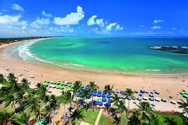
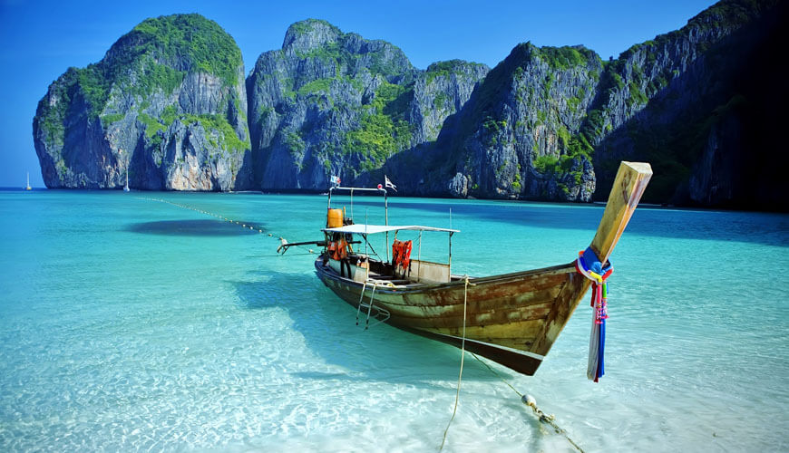

CINCO LUGURES QUE AINDA QUERO CONHECER
Dubai/ Cidade nos Emirados Árabes Unidos

Dubai é uma cidade e um emirado dos Emirados Árabes Unidos conhecida pelos shoppings de luxo, pela arquitetura ultramoderna e pela animada vida noturna. Burj Khalifa, uma torre de 830 metros de altura, domina a linha do horizonte repleta de arranha-céus. Na base, há a Fonte de Dubai, com jatos de água e luzes coreografados ao som de música. Nas ilhas artificiais próximas à costa, fica o Hotel Atlantis, um resort com parques aquáticos e de animais
Disney/ Orlando, na Flórida, Estados Unidos

A Disney, oficialmente conhecida como The Walt Disney Company, é um conglomerado global de entretenimento conhecido por sua influência na indústria de mídia e entretenimento. Fundada em 16 de outubro de 1923, por Walt Disney e Roy O. Disney, a empresa começou como um pequeno estúdio de animação e desde então se tornou uma das maiores e mais diversas empresas de entretenimento do mundo..
Porto de Galinhas/ Praia em Pernambuco

Porto de Galinhas é uma praia localizada no distrito homônimo, pertencente ao município de Ipojuca, no estado de Pernambuco, Brasil. A região possui piscinas de águas claras e mornas formadas entre corais, além de estuários, mangues, areia branca e coqueirais.
Praias da Tailândia /Tailândia

A Tailândia é famosa por suas praias paradisíacas, oferecendo uma variedade de paisagens que vão desde ilhas isoladas até extensas faixas de areia perto de grandes cidades.
O Pão de Açúcar, Rio de Janeiro, no Brasil.

O Pão de Açúcar é uma icônica formação rochosa localizada no Rio de Janeiro, Brasil. Com aproximadamente 396 metros de altura, ele se ergue na entrada da Baía de Guanabara, no bairro da Urca. Este monólito de granito oferece vistas panorâmicas espetaculares da cidade, incluindo pontos turísticos como o Cristo Redentor, as praias de Copacabana e Ipanema, e a própria baía.
Este parágrafo será alterado usando JavaScript.